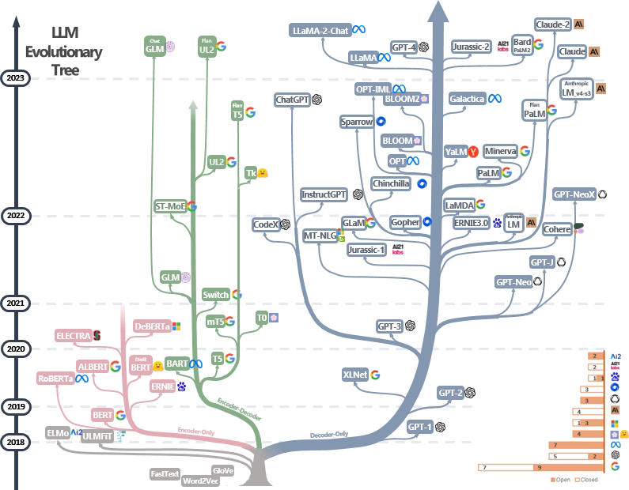

资源搜集合集&不含面试题&
created: 2025-01-24T00:20 updated: 2025-01-26T02:03
Awesome-LLM
一个关于大型语言模型(LLM)的精选资源列表.它涵盖了与LLM相关的多个方面,包括论文、排行榜、开放模型、数据、评估工具、培训框架、部署工具、应用程序、书籍以及相关课程等.该项目旨在为研究人员、开发者和对LLM感兴趣的人提供一个全面的资源导航,帮助他们快速了解和掌握LLM领域的最新进展和技术.
GitHub - Hannibal046/Awesome-LLM: Awesome-LLM: a curated list of Large Language Model
Awesome-Chinese-LLM
本项目旨在收集和梳理中文LLM相关的开源模型、应用、数据集及教程等资料,目前收录的资源已达100+个！
LLM-Action
吃果冻不吃果冻皮,纯大佬,每日有分享
虽然他的教程非常完整,but 动辄A100*2块的配置不是一般人能玩的 /(ㄒoㄒ)/~~
GitHub - liguodongiot/llm-action: 本项目旨在分享大模型相关技术原理以及实战经验（大模型工程化、大模型应用落地）
作者的知乎
https://www.zhihu.com/people/liguodong-iot
Awesome LLM Apps
选的 LLM 应用集合,使用 RAG 和 AI 代理构建.此存储库包含使用 OpenAI、Anthropic、Google 的模型,甚至 LLaMA 等开源模型的 LLM 应用,您可以在计算机上本地运行这些模型.
大模型的发展历程项目
GitHub - daiwk/collections: https://www.daiwk.net/
大型语言模型实用指南 LLMsPracticalGuide
一份精选的（仍在积极更新）LLM 实用指南资源列表。它基于我们的调查论文：>在实践中发挥 LLM 的力量：对 ChatGPT 及其他领域的调查>以及 @> >xinyadu的努力。调查部分基于本 >博客>的后半部分>。我们还构建了现代大型语言模型 (LLM) 的进化树，以追踪近年来语言模型的发展，并重点介绍了一些最著名的模型。
这些资源旨在帮助从业者了解大型语言模型 (LLM) 的广阔前景及其在自然语言处理 (NLP) 应用中的应用。我们还根据模型和数据许可信息包含了它们的使用限制。如果您发现我们存储库中的任何资源有用，请随意使用它们（不要忘记引用我们的论文！>😃>）。我们欢迎提交拉取请求来完善此图！

《大模型基础》 浙大 毛玉仁 高云君
GitHub - ZJU-LLMs/Foundations-of-LLMs
大语言模型相关论文>文件夹中包含了各章节的相关论文，当前正处于不断更新中。
Awesome-LLM-KG
关于统一 LLM 和 KG 的精彩论文
https://github.com/RManLuo/Awesome-LLM-KG
awesome-LLMs-In-China
中国大模型列表 Awesome LLMs In China
GitHub - wgwang/awesome-LLMs-In-China: 中国大模型
AI-Resources-Central
本仓库专注于汇集来自全球的优秀人工智能（AI）开源项目。无论你是寻找灵感来启动自己的项目，还是想要学习如何使用最新的AI技术，这里都是一个绝佳的起点。我们致力于为AI开发者、研究人员以及爱好者提供一个平台，以便于探索、交流并共享各种AI项目的代码与实现。
blogs
博客文章记录及资源
GitHub - opconty/blogs: 本仓库用于记录和共享“laygin”公众号中的博客文章，包括文中用到的素材资源、代码资料等等。